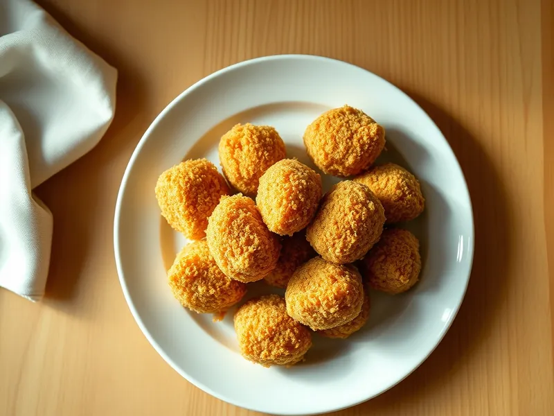

Картофельные крокеты в сухарях
Цилиндрики из картофельного пюре в хрустящей панировке из сухарей
60 мин4 порц.384 ккал на порциюБ 9 · Ж 18 · У 46Европейская кухня
Открыть в приложении: порции, таймеры, список покупок
Продукты на 4 порц.
- Картофель6 шт
- Яйцо куриное2 шт
- Сливочное масло20 г
- Мука пшеничная2 ст. л.
- Панировочные сухари60 г
- Мускатный орех1 щеп.
- Соль1 ч. л.
- Растительное масло40 мл
Как готовить
- Очистите картофель, разрежьте на части и отварите в подсоленной воде 20 минут до мягкости.
- Слейте воду, подсушите картофель на слабом огне 1-2 минуты и разомните в пюре со сливочным маслом, мускатным орехом и солью.
- Остудите пюре 15 минут, вмешайте один желток. Сформуйте мокрыми руками цилиндрики длиной 6 см.
- Обваляйте крокеты в муке, затем в яйце, взбитом с оставшимся белком, и в панировочных сухарях.
- Разогрейте масло слоем 1 см в сковороде на среднем огне и обжаривайте крокеты партиями 4-5 минут, переворачивая, до ровной золотистой корочки.
- Выложите на бумажное полотенце и подавайте горячими.
Совет. Пюре для крокетов делают без молока: слишком жидкая масса расползётся в масле.